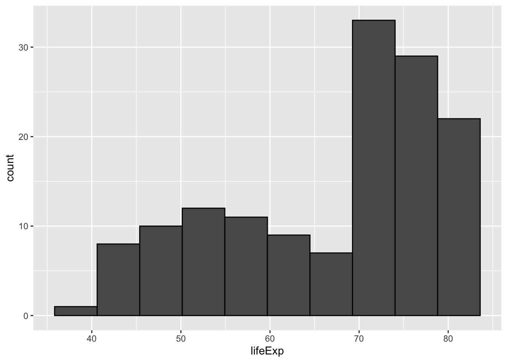

Building on the previous section, this is where things get visual!
Finally!
We’ll start by loading the tidyverse and gapminder for the data:
library(tidyverse)
── Attaching core tidyverse packages ──────────────────────── tidyverse 2.0.0 ──
✔ dplyr 1.1.4 ✔ readr 2.1.5
✔ forcats 1.0.0 ✔ stringr 1.5.1
✔ ggplot2 3.5.1 ✔ tibble 3.2.1
✔ lubridate 1.9.4 ✔ tidyr 1.3.1
✔ purrr 1.0.2
── Conflicts ────────────────────────────────────────── tidyverse_conflicts() ──
✖ dplyr::filter() masks stats::filter()
✖ dplyr::lag() masks stats::lag()
ℹ Use the conflicted package (<http://conflicted.r-lib.org/>) to force all conflicts to become errors
library(gapminder)
Introducing: ggplot2
As far as data visualization goes, ggplot2 is probably the most popular package in the R ecosystem.
It’s an implementation of the “Grammar of graphics”, hence the gg, and it’s well known for its versatility. We can create the most common types of plots with relative ease, including
Scatterplots
Boxplots
Histograms
Barcharts (horizontal or vertical)
A ggplot is made up of layers, which are added to the plot with + and can be modified with + as well.
Think of building a ggplot as stacking layers on top of each other, and modifying the layers as you go.
Let’s start with an example of a scatterplot:
ggplot(gapminder)
This doesn’t really do anything yet – it’s the empty layer. But at least we specific a dataset.
ggplot(gapminder, mapping =aes(x = lifeExp, y = gdpPercap))
Here we used aes() to declare a mapping or aesthetics between the variables lifeExp to the x-axis and gdpPercap to the y-axis. This is the crucial step to creating a plot! But we have not decided what the geometric object is going to be, which is the geom_ part of the plot.
ggplot(gapminder, aes(x = lifeExp, y = gdpPercap)) +geom_point()
This already looks like a scatterplot!
We might want to adjust the point size, color, etc. – that’s the job of the geom!
ggplot(gapminder, aes(x = lifeExp, y = gdpPercap)) +geom_point(size =5, color ="#206b0d", alpha =0.1)
We can save the plot to a variable p and then modify it afterwards:
p <-ggplot(gapminder, aes(x = lifeExp, y = gdpPercap)) +geom_point(size =3, color ="blue", alpha =0.25)p
For example, we can try out some themes, for examples those provided by the ggthemes package:
library(ggthemes)p +theme_calc()
p +theme_economist()
p +theme_base()
p +theme_excel()
p +theme_excel_new()
p +theme_stata()
# Default theme, but with bigger textp +theme_gray(base_size =14)
Playing around with ggplot themes is usually a great way to spend an afternoon, so we’ll leave it at that for now, but you can find more info at the ggthemes website or ggplot2’s documentation at https://ggplot2.tidyverse.org.
Core geom_s
For now we will keep the colors and theming simple and focus on the most common types of plots you’ll likely want to create:
Scatterplots -> geom_point()
Boxplots -> geom_boxplot()
Histograms -> geom_histogram()
Barcharts (horizontal or vertical) -> geom_col() or geom_bar()
As a general tip, it’s often useful to use tidyverse verbs as “pre-processing” before piping data into ggplot(), that way you can focus on the plot itself after you have prepared your data to look like you need it for the type of plot you want.
Scatterplots
We have seen an example scatterplot before, but given the data at hand it’s probably more useful to focus on a specific year at a time, which is easiest to do with a filter() step beforehand
p <- gapminder |>filter(year ==1987) |>ggplot(aes(x = lifeExp, y = gdpPercap)) +geom_point()
Note
If you get confused between using |> and +, know that you are not alone!
Luckily, the error messages are informative.
A more advanced examples would be to add a linear regression line, but in this case we can already see that a linear fit is not appropriate here. We can still add a regression line though, by adding new layer:
p +geom_smooth()
`geom_smooth()` using method = 'loess' and formula = 'y ~ x'
geom_smooth() will add a general trendline, which could be a linear model or a loess curve or a GAM – if you want to explicitly add a linear trendline, use geom_smooth(method = "lm"), but beware that this is not always approriate!
p +geom_smooth(method ="lm", color ="red", se =FALSE)
`geom_smooth()` using formula = 'y ~ x'
In some cases, a scatterplot is maybe not well suited, for example if the x-variable is technically numeric but effectively categorical, like year in this case:
gapminder |>ggplot(aes(x = year, y = gdpPercap)) +geom_point()
That’s where boxplots are useful!
Boxplots
So a boxplot where each year gets its own box should be straight forward, yes?
gapminder |>ggplot(aes(x = year, y = gdpPercap)) +geom_boxplot()
Warning: Continuous x aesthetic
ℹ did you forget `aes(group = ...)`?
Unfortunately, no. Since year is technically numeric, we have two ways to deal with it and let ggplot now that year should be used as a grouping variable, and one of which the error message already suggested:
gapminder |>ggplot(aes(x = year, y = gdpPercap, group = year)) +geom_boxplot()
gapminder |>ggplot(aes(x = year, y = gdpPercap, group = year)) +geom_boxplot() +scale_y_log10()
Here group is used within aes() as a special mapping that tells ggplot that year should be used to group the data into boxplots without us needing to otherwise modify the data.
However, if we wanted, we could also recode year to be a factor variable just for this one case, which should alos get us where we need:
gapminder |>mutate(year =as.factor(year)) |>ggplot(aes(x = year, y = gdpPercap)) +geom_boxplot()
A histogram is technically a type of barchart, but since it’s so common and requires binning the data, it get’s a special place within ggplot.
p <- gapminder |>filter(year ==2007) |>ggplot(aes(x = lifeExp))p +geom_histogram(color ="black")
`stat_bin()` using `bins = 30`. Pick better value with `binwidth`.
If the defaults are not suited well, we can adjust the bins with binwidth (in this case the number of years on the x-axis) or bins to specify the number of bins in total. Another thing we’ll add is the color argument, which for a barchart changes the outline color of the bars and let’s us see the bars better. There’s also fill, which changes the fill color of the bars.
p +geom_histogram(binwidth =5, color ="black")
p +geom_histogram(binwidth =10, color ="black")
p +geom_histogram(bins =10, color ="black")

Barcharts
Sometimes people use different names vor horizontal or vertical bar charts, and confusingly enough ggplot only differentiates between “column” charts and “bar” charts, both of which can have either orientation.
Let’s settle on a simple goal: the number of observations (countries) per continent in 2007.
For practice, let’s first calculate that using dplyr verbs and use the n() helper function which just counts the number of rows (in a group):
# A tibble: 5 × 2
continent n
<fct> <int>
1 Africa 52
2 Americas 25
3 Asia 33
4 Europe 30
5 Oceania 2
But we digress – let’s get charting:
geom_bar() behaves similar to geim_histogram(), but for categorical variables. It doesn’t do any binning, and just counts the number of observations for each group defined by the variable passed to x:
p <- gapminder |>filter(year ==2007) |>ggplot(aes(x = continent)) +geom_bar()p
If we want to change orientation, it’s easy to do, but there are multiple ways!
The reason there are multiple ways to do that is because early on, only version 1 was possible, and version 2 was only made possible relatively recently.
There are many things like that in ggplot2, so please don’t be afraid to try out different ways of doing things — unless you get a warning or error message, it’s probably fine if it gets you what you want, and when in doubt there’s always good onlie documentation or tutorials.
But what about geom_col?
Well, sometimes we just want to make a barchart without ggplot doing the counting for us!
Maybe we want percentages rather than absolute numbers on the y-axis for example. That’s what geom_col() is for: It let’s us define xandy variables.
Let’s say we want the same basic plot as before, but with percentages:
gapminder |>filter(year ==2007) |>group_by(continent) |>summarize(n =n(),percent = n /n_distinct(gapminder$country) ) |>ggplot(aes(x = continent, y = percent)) +geom_col()
Note that we need to refer to the full dataset to get the total number of countries here in order to calculate the percentages, because after we have used group_by(), all operations are limited to the group we are currently working with!
So as far as the plot goes, this is technically correct, but not very nice to look at.
Let’s use this as a starting point to make our plots a little nicer!
Your turn: Customization
If we wanted to use this plot in a publication or presentation, we probably should make a few tweaks.
Let’s specify a few “wants”, together with a few hints on how to achieve them, and experiment with them!
Change the axis labels to something more human-readable
Add a title, subtitle, and caption to better describe what we’re seeing
The function color() lists all color names R knows, otherwise you can use RGB codes like #CBDFBD if you google “RGB color picker” you’ll find a lot of examples!
Reordering the continents is as easy as using reorder()!
gapminder |>filter(year ==2007) |>group_by(continent) |>summarize(n =n(),percent = n /n_distinct(gapminder$country) ) |>ggplot(aes(x =reorder(continent, desc(percent)), y = percent)) +geom_col(fill ="#63AEE1") +scale_y_continuous(breaks =seq(0, 1, by =0.1),labels = scales::label_percent() ) +labs(title ="Countries per Continent",subtitle ="Data from Gapminder",x ="Continents in Gapminder",y ="Countries per Continent",caption ="Data as of 2007" )
Advanced ggplot2
“But isn’t there an easier way?”
Yes, there is! ggplot2 is all about the building blocks, and for many common scenarios it’s cumbersome to always stack the same components on top of each other.
Luckily there are tons of R packages either extending ggplot2 or providing wrappers for common needs.
One of those wrapper packages is ggstatsplot, which you should have installed earlier in the course but which we haven’t used yet.
As the title suggest this package is primarily aimed towards statistical comparisons, but it can also be used for exploratory analyses.
library(ggstatsplot)
You can cite this package as:
Patil, I. (2021). Visualizations with statistical details: The 'ggstatsplot' approach.
Journal of Open Source Software, 6(61), 3167, doi:10.21105/joss.03167
gapminder |>filter(year ==2007) |>ggbetweenstats(x = continent, y = lifeExp,xlab ="Continent",ylab ="Life Expectancy (years)",title ="Life Expectancy by Continent (2007)" )
We can disable some of the statistical information by using bf.message = FALSE and results.subtitle = FALSE:
Recreating something like this with ggplot2 is a bit of a chore, but ggstatsplot makes it a lot easier! Here’s an incomplete attempt of recreating the above plot: